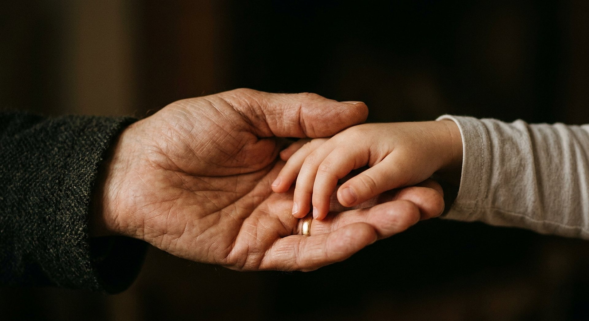
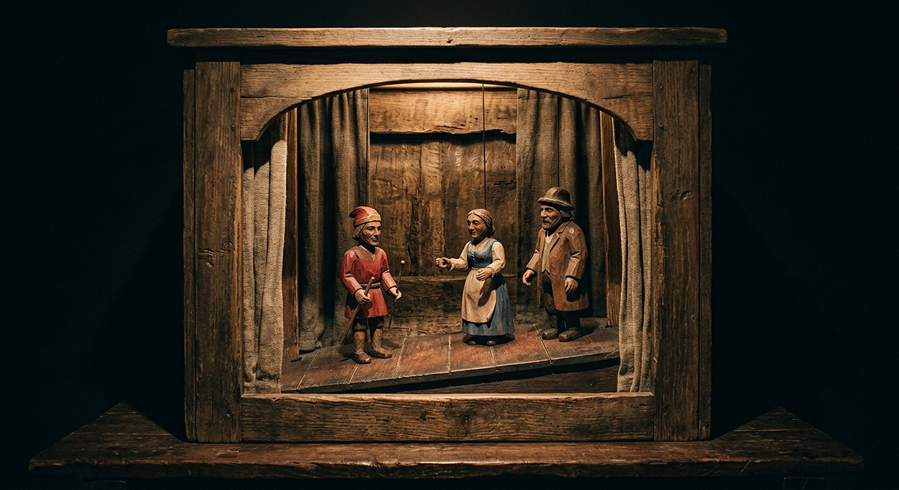

Avant de savoir parler, un bébé de six mois préfère celui qui aide. Aucune autre espèce connue n’écrit de symphonie, ni ne se demande d’où elle vient.
Faits établisPoints débattusRéflexion signalée

Une morale qui précède les mots, et un besoin de sens qui ne sert pas à manger.
Crédit : Illustration générée pour CREATIO · Licence : Usage interne au site
Cette salle cherche ce qui nous rend humains — et refuse la réponse en une ligne. Elle présente trois pistes sérieuses (la morale précoce, le langage, le besoin de sens), corrige une formule de presse très répandue (« le gène du langage ») et laisse ouvertes les questions qui le sont vraiment.
Textes bibliques cités
« Faisons l’homme à notre image, selon notre ressemblance. »
Genèse 1:26
Une dignité reçue, non mesurée : c’est le cadre de la salle, et il est présenté comme tel.
« Heureux ceux qui sont conscients de leur besoin spirituel. »
Matthieu 5:3
Le texte place le besoin spirituel au départ, non à l’arrivée — une phrase étrange pour un manuel de survie.
« Qu’est-ce que l’homme pour que tu te souviennes de lui ? »
Psaume 8:4
La question elle-même est un fait observable : voilà une espèce qui se demande ce qu’elle est.
M1
Une morale avant les mots
Dans une expérience publiée en 2007, des nourrissons de six mois — donc avant tout langage — regardent une petite scène de marionnettes : un personnage aide un autre à monter une pente, un troisième le gêne. Les bébés préfèrent ensuite celui qui aide, et évitent celui qui gêne.

La scène de l’expérience de 2007 : un personnage aide, un autre gêne.
Crédit : Illustration générée pour CREATIO · Licence : Usage interne au site
2007évaluation sociale chez des nourrissons de 6 mois
Des nourrissons de six mois, avant l’acquisition du langage, préfèrent un individu qui aide autrui à un individu qui le gêne.
Une évaluation du comportement d’autrui qui précède tout enseignement explicite — une préférence, déjà là.
Nuance
L’expérience porte sur un **petit nombre d’enfants** et montre une **préférence**, non une « loi morale innée » complète. Les résultats ont été discutés et partiellement répliqués : le musée écrit la nuance dans le texte affiché, pas en note.
M2
Le langage : un gène ne fait pas une langue
En 2001, une famille chez laquelle un trouble sévère de la parole se transmettait a permis d’identifier un gène, FOXP2. Il est impliqué dans le contrôle moteur de la parole — la mécanique des muscles, pas le sens de ce qu’on dit. Et deux acides aminés seulement séparent la version humaine de celle du chimpanzé.
2acides aminés de différence entre FOXP2 humain et chimpanzé
Le gène FOXP2 intervient dans le contrôle moteur de la parole ; sa version humaine diffère de celle du chimpanzé par deux acides aminés.
Un gène qui règle les doigts du pianiste, pas la partition qu’il choisit de jouer.
Nuance
La formule « **gène du langage** » est fausse, et la salle la corrige explicitement. FOXP2 intervient aussi dans le chant des oiseaux et l’écholocation des chauves-souris : autrement dit, ce n’est pas lui qui fait une langue.
M3
La récursion
Ce qui distinguerait le langage humain, selon une hypothèse influente de 2002, c’est la récursion : la possibilité d’imbriquer des éléments dans des éléments — « l’homme que le chien que l’enfant a caressé a mordu dort ». Mais l’exclusivité humaine de cette capacité est discutée.
2002hypothèse de la récursion comme faculté de langage au sens étroit
Le langage humain se distinguerait par la récursion ; l’exclusivité humaine de cette capacité reste discutée dans la littérature.
Une phrase dans une phrase dans une phrase, apparemment sans limite — sauf celle de notre mémoire de travail.
Nuance
Il faut distinguer la faculté de langage **au sens large** (mémoire, imitation, intention : partagée avec d’autres animaux) et **au sens étroit** (récursion : peut-être propre à l’humain). Le musée ne tranche pas cette distinction contestée.
M4
Un besoin qui ne sert pas à manger
Poser des questions sur l’origine, la mort et la justice n’est pas nécessaire à la survie immédiate. Et pourtant, aucune population humaine connue n’a cessé de les poser : les tombes, les mythes d’origine et les rites se retrouvent partout. C’est une observation anthropologique, pas une mesure.
Poser des questions sur l’origine n’est pas nécessaire à la survie — et aucun peuple n’a cessé de les poser.
Crédit : Illustration générée pour CREATIO · Licence : Usage interne au site
universelobservation anthropologique, non mesurable
Le besoin de sens — questions sur l’origine, la mort, la justice — n’est pas nécessaire à la survie immédiate, mais il est universellement observé.
Une capacité qui ne sert pas à se nourrir, et qu’aucun peuple n’a jamais cessé d’exercer.
Nuance
L’universalité est une **observation**, non une mesure ; le rattachement à Matthieu 5:3 relève du registre biblique et il est présenté comme tel. Aucune explication évolutionniste de la religiosité n’est donnée comme établie.
Ce que la science dit honnêtement
Les limites, dites franchement
« Ce qui nous rend humains » n’est pas un fait unique
Les candidats sont nombreux : langage, morale, musique, coopération cumulative, théorie de l’esprit, deuil, transmission culturelle. Cette salle en présente quelques-uns et refuse la réponse en une ligne — parce qu’il n’y en a pas.
Ne pas déclarer « propre à l’homme » trop vite
Outils, émotions, culture, sens de l’équité : des traits qu’on croyait exclusifs ont été retrouvés chez d’autres espèces. Mais l’inverse est vrai aussi : aucune autre espèce n’écrit de symphonie ni ne construit de télescope. Le musée expose les deux constats, sans arrondir.
Aucune hiérarchie entre les peuples
Cette salle ne parle jamais de « peuples primitifs » : toutes les populations humaines actuelles ont les mêmes capacités cognitives de base. Une différence de technique n’est pas une différence de nature.
Réflexion — et non mesure
Lecture proposée
Un enfant de six mois préfère celui qui aide. Un gène règle les muscles de la parole, mais pas ce qu’on choisit de dire. Aucune de ces découvertes n’explique pourquoi un être humain peut pleurer en écoutant une musique, écrire un poème pour un mort, ou demander, seul dans le noir, si quelqu’un l’entend. Les mesures décrivent des capacités ; elles ne disent pas ce qu’un homme vaut. « Heureux ceux qui sont conscients de leur besoin spirituel » : une espèce qui n’aurait besoin que de manger, de se reproduire et d’éviter le danger n’aurait pas écrit cette phrase. Le musée propose cette lecture comme une réflexion — elle ne découle pas des mesures, elle les prolonge, et il le dit.
« Il a mis dans leur cœur la pensée de l’éternité. »
Ecclésiaste 3:11
Questions honnêtes
Les objections, prises au sérieux
« Les animaux ont-ils une morale ? »
Des comportements d’équité, d’empathie et de consolation sont documentés chez plusieurs espèces. Les frontières sont moins nettes qu’on ne le croyait — et cette salle préfère une frontière floue bien décrite à une frontière nette inventée.
« Le langage est-il ce qui nous distingue ? »
C’est un candidat sérieux : d’autres animaux ont des systèmes de communication complexes, mais le débat porte sur la structure, non sur le volume. La récursion est un argument, pas une preuve.
« FOXP2 est-il le gène du langage ? »
Non. C’est une formule de presse. FOXP2 intervient dans le contrôle moteur de la parole, existe chez beaucoup d’espèces, et ne détermine ni le vocabulaire ni les idées. Le musée corrige l’expression à chaque fois qu’il la cite.
« La religion est-elle un besoin biologique ? »
Des chercheurs proposent des explications évolutionnistes de la religiosité ; ce sont des hypothèses, non des résultats. La salle les mentionne sans les trancher — et ne les utilise pas comme argument.
« Pourquoi Matthieu 5:3 ? »
Parce que ce texte place le besoin spirituel au départ et non à l’arrivée, ce qui correspond à l’angle de la salle. C’est une lecture proposée, clairement étiquetée, après les faits.
Ce que l’on pourra manipuler
Interactions de la salle
Chaque interaction possède un repli lisible sans JavaScript.
Interaction
Contenu
Repli
Théâtre des marionnettes
Reconstitution schématique de l’expérience de 2007 : le visiteur regarde la scène, choisit, puis découvre ce qu’ont fait les nourrissons — et les limites de l’expérience.
La scène décrite en texte, le résultat, l’effectif et les limites, avec la source.
Phrases imbriquées
Un générateur de phrases récursives : au-delà de trois ou quatre niveaux, la compréhension humaine elle-même flanche. Démonstration honnête de la récursion et de ses limites.
Trois phrases de niveaux croissants, et l’explication du décrochage de compréhension.
FOXP2, sans mythe
Une fiche interactive montre ce que le gène fait (contrôle moteur de la parole) et ce qu’il ne fait pas (le sens), avec la source de 2001 et la comparaison de 2002.
Le tableau « fait / ne fait pas », en texte, avec les deux références.
« Propre de l’homme ? »
Six capacités à classer — propre à l’humain / partagée / discutée : outils, deuil, équité, musique, récursion, transmission culturelle. L’utilisateur découvre que la plupart sont… discutées.
Les six capacités et leur statut, avec la source de chaque évaluation.
Aile VIII · Le Cabinet des merveilles
Aller plus loin : les fiches du Cabinet
Cette salle donne l’essentiel. Le Cabinet reprend chaque mécanisme avec sa source primaire,
son chiffre daté et sa question honnête.
Un oiseau australien dispose des objets devant son nid pour produire un effet de perspective ; un poisson de 12 cm dessine sur le sable un mandala de deux mètres ; certaines plumes sont si noires qu’elles absorbent presque toute la lumière.